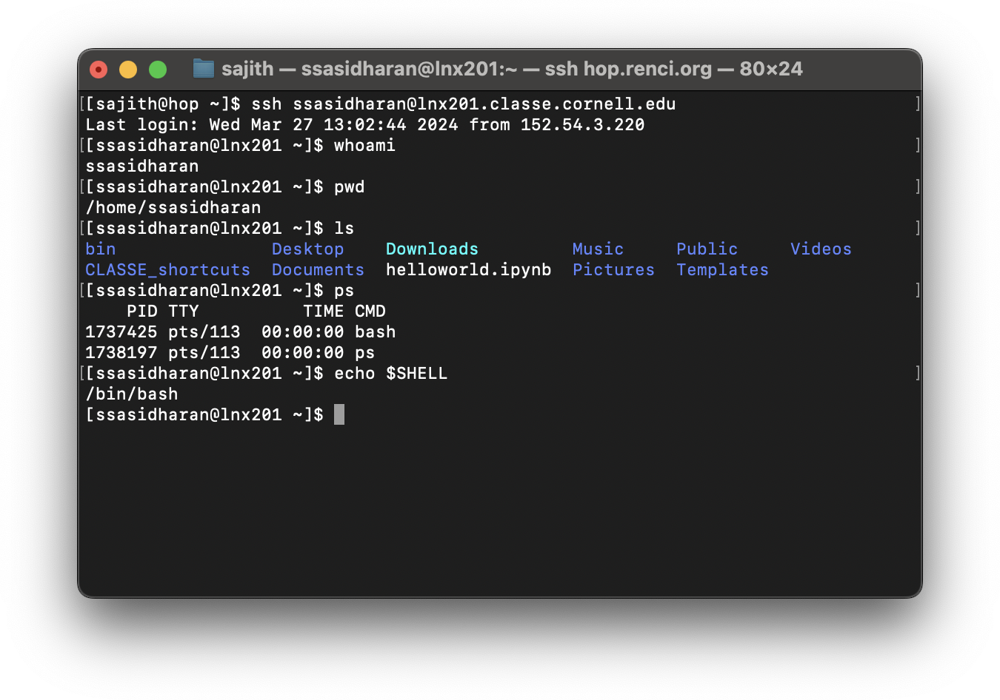

Linux, Commandline, and Scripting
The following notes assume that you are all set up to use your accounts on the CLASSE Linux systems.
- You know how to use
sshto accesslnx201; or - You know how to launch a terminal from CLASSE JupyterLab instance.
Depending on your level of familiarity with the system, you might know enough commands to find your way around.
But it probably is not a good idea to assume that you know your way around, so let us see what you might need to know to in order to become a proficient user of the systems.
Some words about Linux
Some words about command line
Suppose you want to find all the text files in a directory that contain a certain pattern, like “hello”. How would you do that?
Now suppose you want to replace all instances of “hello” with “bonjour”. How would you do that?
You can do these things using the Linux command line. You would be invoking commands like find and grep and sed and awk, instead of using programs with a graphical user interfaces.
Plenty of software with friendly user interfaces exist, and they are often easier to use. In order to use the command line, you will have to be familiar with often arcane tools and memorize stuff.
Why would you want to use the command line then?
Because, for certain types of tasks, it is often quick and efficient to use the command line. You can “chain” or compose separate programs that do different things together. You can also save fairly complicated tasks in the form of scripts for later use, and share them with your colleagues.
Learning to use the command line well will leave more power on your hands.
The shell
A shell is an interactive program that accepts commands and passes those commands to the operating systems to execute.
In the shell, you type a command, hit enter, and the command gets executed. Shell is the program that is responsible for accepting your commands, executing them, and printing the results on a console.
The screenshot below shows a how this works in practice: using a terminal program, I’m using ssh command to access the host lnx201.classe.cornell.edu (just lnx201 henceforth), and then I’m running some commands on lnx201.

Nearly all Linux distributions ship a shell named bash. In the lnx201 environment that you access, bash is the default shell. You will be staring at a bash prompt when you ssh to lnx201.
Although bash is the most popular shell, many other shells exist too: csh, ksh, dash, zsh, and so on. But let us not get distracted and just commit to bash for now.
Shell history
- up/down keys
historyControl + R
Command completion
- Using the tab key
Exiting a shell
exitControl + D
Environment variables
During a session, the shell maintains some information in what is known as environment variables. They are pairs of key and value: programs can look up values by keys, and change their behavior accordingly.
To list the environment variables present in your session, use printenv command:
[ssasidharan@lnx201 ~]$ printenv
HOSTNAME=lnx201.classe.cornell.edu
TERM=xterm-256color
SHELL=/bin/bash
HISTSIZE=1000
SSH_CLIENT=152.54.3.220 50338 22
SSH_TTY=/dev/pts/6
USER=ssasidharan
MAIL=/var/spool/mail/ssasidharan
PATH=/usr/lib64/qt-3.3/bin:/usr/local/bin:/usr/bin:/usr/local/sbin:/usr/sbin:/opt/puppetlabs/bin:/home/ssasidharan/bin
PWD=/home/ssasidharan
LANG=en_US.UTF-8
HOME=/home/ssasidharanI’m omitting a whole bunch of stuff here for the sake of brevity, but you get the idea.
Some of these environment variables are worth knowing:
USERis your username onlnx201.HOMEis your “home” directory onlnx201. This is where you keep your files and folders.SHELLis the shell you use currently.PATHis a list of directory names, separated by:(colon) character. When you enter a command on the shell prompt, the shell will usePATHto locate the program that it needs to run.
How bash sets up the environment
- login shells, non-login shells
- /etc/profile, ~/.bash_profile
- /etc/bashrc, ~/.bashrc
Changing environment variables
exportcommandecho $HOMEcommand
Standard input, output, and error
Nearly all programs produce output of some kind, and quite often they also accept input.
Following the Unix tradition of “everything is a file”, programs send their output to special files called standard output or standard error, and they read input from _standard input_. They are also known asstdout,stderr, andstdin`, respectively.
I/O redirection
I/O redirection lets us to change where standard output gets printed. To redirect standard output, we use the > operator.
[ssasidharan@lnx201 ~]$ ls -l > ls-output.txtAs a result of redirection, a new file named ls-output.txt will be created. You can view its contents using cat command.
[ssasidharan@lnx201 ~]$ ls -l ls-output.txt
-rw-r--r-- 1 ssasidharan chess 807 Apr 1 17:32 ls-output.txt
[ssasidharan@lnx201 ~]$ cat ls-output.txt
total 4
drwxr-xr-x 2 ssasidharan chess 28 Mar 28 09:36 bin
drwxr-xr-x 2 ssasidharan chess 144 Mar 12 00:27 CLASSE_shortcuts
drwxr-xr-x 2 ssasidharan chess 30 Mar 26 15:22 Desktop
drwxr-xr-x 2 ssasidharan chess 6 Mar 26 15:21 Documents
lrwxrwxrwx 1 ssasidharan chess 31 Mar 26 15:21 Downloads -> /cdat/tem/ssasidharan/Downloads
-rw-r--r-- 1 ssasidharan chess 3254 Mar 7 15:55 helloworld.ipynb
-rw-r--r-- 1 ssasidharan chess 0 Apr 1 17:32 ls-output.txt
drwxr-xr-x 2 ssasidharan chess 6 Mar 26 15:21 Music
drwxr-xr-x 2 ssasidharan chess 6 Mar 26 15:21 Pictures
drwxr-xr-x 2 ssasidharan chess 6 Mar 26 15:21 Public
drwxr-xr-x 2 ssasidharan chess 6 Mar 26 15:21 Templates
-rwxr-xr-x 1 ssasidharan chess 0 Mar 28 13:39 test.sh
drwxr-xr-x 2 ssasidharan chess 6 Mar 26 15:21 VideosNote that if there already was a file named ls-output.txt, the redirection above would have overwritten its contents. You want to be careful about this.
What if you want to discard stdout completely? You can redirect it to the special file /dev/null:
[ssasidharan@lnx201 ~]$ ls -l >> ls-output.txtIf you want to append stdout to a file instead of overwriting it, you can use >> operator:
[ssasidharan@lnx201 ~]$ ls -l >> ls-output.txtThe < operator is a sort of inverse of the > operator:
[ssasidharan@lnx201 ~]$ echo "Shall I compare thee to a summer’s day?" > sonnet18.txt
[ssasidharan@lnx201 ~]$ cat sonnet18.txt
Shall I compare thee to a summer’s day?
[ssasidharan@lnx201 ~]$ cat < sonnet18.txt
Shall I compare thee to a summer’s day?(TODO: explain the above: echo and the different usage of cat.)
Pipes
Programs can write to standard output. Programs can also read from standard input. This means we can “chain” them together, such that one programs standard output is “piped” into another program’s standard input.
The operator to do this is | (vertical bar), also known as a pipe, and it is used in this manner: command1 | command2.
[ssasidharan@lnx201 ~]$ ls -l /bin/ | lessThe output of ls -l /bin is fairly large, so we pipe it into less, which allows you to scroll the output backward and forward, using up and down keyboard keys.
You can form longer pipes like this:
[ssasidharan@lnx201 ~]$ ls /bin /usr/bin /sbin /usr/sbin | sort | uniq | wc
4289 4288 46820sortwill sort lines of text files.uniqis used to filter adjacent matching lines the output ofsort.wcis a word count program. It counts lines, words, and bytes present in its input.
Controlling processes
When you run a command, it results in what is called a process. Processes are running instances of programs which use CPU, memory, and possibly other resources.
Listing processes
You can list running processes using ps command:
[ssasidharan@lnx201 ~]$ ps
PID TTY TIME CMD
694411 pts/81 00:00:00 ps
3479688 pts/81 00:00:00 bashBy default, ps prints processes of the current user and terminal in four columns:
PIDis process id.TTYis the terminal associated with the process.TIMEis the elapsed CPU time for the process.CMDis the command that created the process.
Usually there are many more processes running in the system, and sometimes they were started by other users. You can list them, with more detail, by passing some options to ps:
[ssasidharan@lnx201 ~]$ ps -ef | head
UID PID PPID C STIME TTY TIME CMD
root 1 0 0 Jan10 ? 03:14:05 /usr/lib/systemd/systemd --switched-root --system --deserialize 22
root 2 0 0 Jan10 ? 00:01:12 [kthreadd]
root 6 2 0 Jan10 ? 00:12:16 [ksoftirqd/0]
root 7 2 0 Jan10 ? 00:01:10 [migration/0]
root 8 2 0 Jan10 ? 00:00:00 [rcu_bh]
root 9 2 0 Jan10 ? 11:14:26 [rcu_sched]
root 10 2 0 Jan10 ? 00:00:00 [lru-add-drain]
root 11 2 0 Jan10 ? 00:05:22 [watchdog/0]
root 12 2 0 Jan10 ? 00:00:24 [watchdog/1]Run man ps for details.
Programs like top and htop will list processes in friendlier, fancier format.
Background and foreground processes
By default, commands run in the foreground: they do their thing, use the terminal (to read input, print output), and finally exit. You need to wait for a foreground process to end before you start the next one, or use another terminal.
When have a long-running process, you have the option of sending it to the background, using the & operator:
[ssasidharan@lnx201 ~]$ sleep 100 &
[1] 949751You can use Control + Z to stop a foreground process and send it to the background:
[ssasidharan@lnx201 ~]$ sleep 100
^Z
[1]+ Stopped sleep 100You can list background processes using jobs command:
[ssasidharan@lnx201 ~]$ jobs
[1]- Running sleep 100 &
[2]+ Stopped sleep 100You can bring a background process to foreground using fg command, and you can terminate it using Control + C:
[ssasidharan@lnx201 ~]$ fg 2
sleep 100
^C
[ssasidharan@lnx201 ~]$You can use bg command to resume a stopped background process:
[ssasidharan@lnx201 ~]$ sleep 100 &
[1] 1746205
[ssasidharan@lnx201 ~]$ sleep 100
^Z
[2]+ Stopped sleep 100
[ssasidharan@lnx201 ~]$ jobs
[1]- Running sleep 100 &
[2]+ Stopped sleep 100
[ssasidharan@lnx201 ~]$ bg %2
[2]+ sleep 100 &Terminating processes
Sometimes you might want to terminate a program, perhaps because it is using too much CPU or memory. You can find out the offending program’s ID using ps or top or htop, and then you can use kill command to end the process.
By default, kill sends a signal called SIGTERM (more on signals later). If SIGTERM is unable to terminate the process (such as when the program is ignoring SIGTERM), you can try SIGKILL:
[ssasidharan@lnx201 ~]$ ps
PID TTY TIME CMD
796679 pts/116 00:00:00 bash
1185454 pts/116 00:00:00 ps
1748299 pts/116 00:00:00 sleep
[ssasidharan@lnx201 ~]$ kill 1748299
[ssasidharan@lnx201 ~]$ ps
PID TTY TIME CMD
796679 pts/116 00:00:00 bash
1203470 pts/116 00:00:00 ps
1748299 pts/116 00:00:00 sleep
[ssasidharan@lnx201 ~]$ kill -SIGKILL 1748299
[2]+ Killed sleep 100You can use killall command to kill processes by name:
[ssasidharan@lnx201 ~]$ killall sleep
sleep(1469283): Operation not permitted
sleep(1509215): Operation not permitted
sleep: no process foundIn the above example, you are not running a sleep process, but some other users are, but you are not allowed to terminate them.
Signals
As mentioned above, kill command sends signals to running processes, and we’ve already seen SIGTERM and SIGKILL. Signals are a process control mechanism. They are used to stop, resume, or terminate processes, and more.
When we use Control + C or Control + Z, we are sending signals to process – SIGINT (or “keyboard interrupt”) and SIGTSTP (or “terminal stop”), respectively.
Signals have numbers: SIGKILL is 9, so you can use kill -9 <pid> instead of kill -SIGKILL <pid>. You can also omit the SIG prefix, and use kill -KILL <pid>.
Here are some common signals:
Signal Value Action Comment
──────────────────────────────────────────────────────────────────────
SIGHUP 1 Term Hangup detected on controlling terminal
or death of controlling process
SIGINT 2 Term Interrupt from keyboard
SIGQUIT 3 Core Quit from keyboard
SIGILL 4 Core Illegal Instruction
SIGABRT 6 Core Abort signal from abort(3)
SIGFPE 8 Core Floating point exception
SIGKILL 9 Term Kill signal
SIGSEGV 11 Core Invalid memory reference
SIGPIPE 13 Term Broken pipe: write to pipe with no
readers
SIGALRM 14 Term Timer signal from alarm(2)
SIGTERM 15 Term Termination signalRun the command man 7 signal to read signal command’s manual page.
Useful commands
A cheat sheet
| Command | Description |
|---|---|
echo |
|
cat |
|
head |
|
tail |
|
more |
|
less |
|
ls |
|
mkdir |
|
cd |
|
cp |
|
rm |
|
sed |
|
awk |
|
grep |
|
sleep |
|
tree |
|
find |
|
du |
|
gzip |
|
tar |
|
ps |
|
top |
|
htop |
|
kill |
|
killall |
|
ping |
|
netstat |
|
ifconfig |
|
ip |
|
hostname |
|
uname |
|
date |
|
cal |
|
clear |
|
history |
|
ssh |
|
scp |
|
sftp |
|
ftp |
|
wget |
|
curl |
Shell builtins
typewhich
Aliases
Regular expressions
- grep
- awk
- sed
Editors
nanovimemacs
Writing shell scripts
The shell also provides a little programming language. You can write commands in a file called a shell script, and make it executable. Shell scripts usually have a .sh filename extension.
Shell scripts are useful when you need to run some complex sequence of commands often.
Here is a simple shell script:
#! /usr/bin/env bash
# A simple script.
echo "Hello world!"Assuming we name the script hello.sh, we can make it executable with chmod, and run hello.sh:
[ssasidharan@lnx201 ~]$ chmod +x hello.sh
[ssasidharan@lnx201 ~]$ ./hello.sh
Hello world!Bash provides some useful constructs such as loops and functions.
- loops
- functions
- seq
- ~/.local/bin or $HOME/bin maybe?
Nifty: terminal multiplexers
tmuxscreen
Finding help and documentation
- finding help: man, info, the web
Further reading
- https://missing.csail.mit.edu/2020/shell-tools/